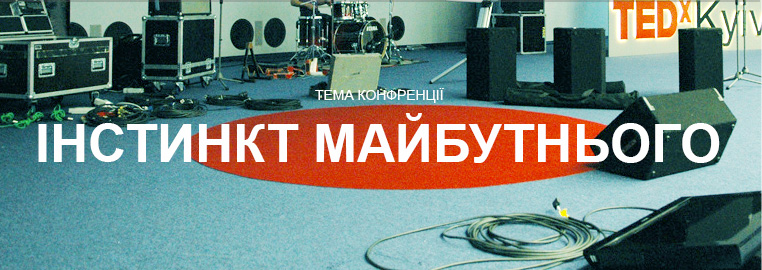

TED – це неприбуткова фундація, і так само всі події TEDx проводяться не заради фінансової винагороди. Отже, TEDxKyiv відбувається лише завдяки щедрій підтримці особливої групи компаній та організацій, які вірять та підтримують рушійну силу ідей. Подібно до головної платформи TED, та з повагою до наших партнерів, ми робимо великий наголос на якість – від продакшну події до відносин з людьми та компаніями.

Сет Годін.
Beatles не винайшли тінейджерів. Вони лише вирішили їх очолити.

Ганс Рослінґ.
Країни рухаються більш-меньш із тією ж швидкістю, що гроші та здоров'я.

Пауль Пшенічка.
TED – загалом прекрасний проект, який дозволяє широкій Інтернет-аудиторії познайомитися "вживу" з цікавими ідеями чи досягненнями.
TEDxKyiv 2013. Шукаємо партнерів за духом та енергією

З чим ми народилися та що ми самі створюємо?
Природне та майбутнє. Історичне проти невідомого?
Чи є прагнення творити від народження?
Скрізь часи майбутнє створюють люди, які інстинктивно прагнуть рухатися.
Махатма Ганді та Стів Джобс, Нікола Тесла та Жюль Верн… Інстинктивно – як рух заради руху?
А хто сказав, що стабільність безпечна?
…Розпадаються держави. Уходять в нікуди гіганти бізнесу. Стабільність, до якої прагне наш розум, є утопія.
І ще ніколи людина не зупинилася. Щось пробуджує її. Якийсь імпульс увімкає її.
Імпульс, що стародавніше, ніж розум – справжній інстинкт. Інстинкт майбутнього
- Горизонти пошуку ідей та рішень

Нові кордоникосмос, океан…
Акредитація спікерів
Акредитація спікерів проводиться організаторами TEDxKyiv.
Для оформлення акредитації необхідно надати такі документи:
- — Заявку.
- — Матеріали доповіді.
Організатори залишають за собою право відмовити у акредитації без пояснення причин.
Стань одним з нас! ПРИЄДНУЙСЯ!
Сет Годін.
Beatles не винайшли тінейджерів. Вони лише вирішили їх очолити.
Ганс Рослінґ.
Країни рухаються більш-меньш із тією ж швидкістю, що гроші та здоров'я.
Пауль Пшенічка.
TED – загалом прекрасний проект, який дозволяє широкій Інтернет-аудиторії познайомитися "вживу" з цікавими ідеями чи досягненнями.